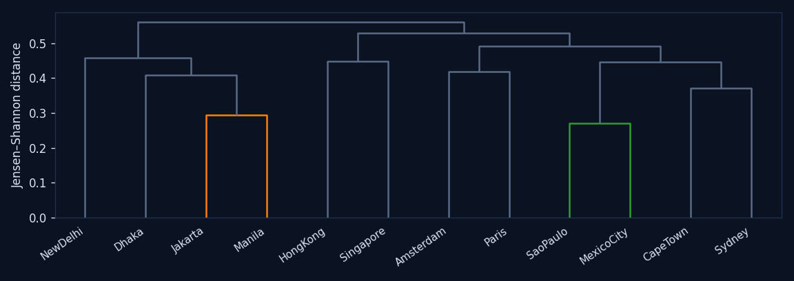

把每座城市看成一条 512 维的视觉基因频谱（该城每个 patch 的主导基因分布，12 城严格等量、去偏）。 像比较物种基因组一样比较城市：谁和谁最像（亲缘树）、哪些基因人人都有 / 哪些是某城独有（泛基因组）、 以及各城的视觉多样性。
城市间距离 = 两城基因频谱的 Jensen–Shannon 散度（分布差异的信息量），层次聚类成树。 纯视觉、无任何地理输入——若树能还原地理/文化分组，说明视觉基因确实抓住了城市的"型"。右侧热图：越亮＝越相似（对角线=自身）。

按同一个阈值（某 gene 占某城 patch ≥0.05%）给 512 个基因贴标签： 12 城都有的是 core universal，只在 1 城出现的是 city-unique， 只在 2 城出现的是 pair-specific，3–5 城出现的是 regional。 下方用下拉列表切换集合；基因收在横向轴中，选中一个基因后查看 12 城示例，图像同位叠放展示激活与原图。
各城基因频谱的香农熵（等效基因数 = 2^熵）——越高＝街景视觉构成越丰富多变，越低＝越单一、模式化。